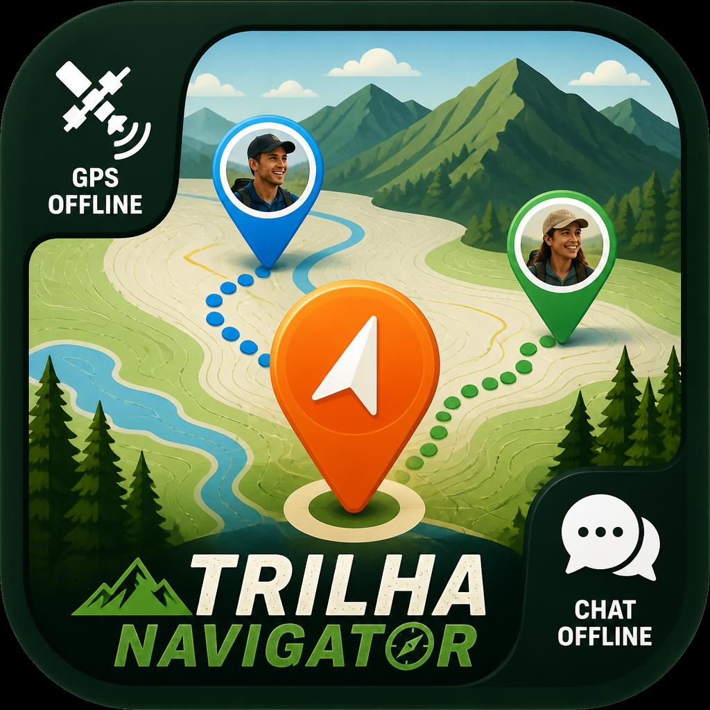

Trilha Navigator PRO
O sistema de navegação e mapeamento tático mais avançado do mercado, desenvolvido para exploradores, off-road, militares e profissionais do agronegócio. Transforme o seu celular num GPS de alta precisão que funciona 100% sem internet.
Baixar na Google PlayNavegação Off-Grid
Motor de rastreamento com filtro anti-ruído. Navegue com mapas de satélite táticos e tenha suporte total a ficheiros KML, KMZ e GPX.
Rádio Mesh Offline (P2P)
Sem internet? O sistema conecta celulares via sinais de rádio a curta distância. Veja a posição dos seus amigos e envie mensagens de áudio encriptadas pela selva.
Ferramentas de Mapeamento
Calcule áreas agrícolas em hectares e perímetros tocando no mapa. Registe Waypoints com fotos e utilize o Cone de Visão (FOV) georreferenciado.
Radar Cloud PRO
Conecte-se aos códigos da sua equipa e acompanhe a posição de todos em tempo real via rede, ideal para resgates, gestão de frotas e eventos.
SOS Tático de Emergência
Painel de emergência integrado e letal. Em caso de perigo extremo, envie as suas coordenadas decimais imediatas via SMS ou WhatsApp para os seus contactos de segurança com um único toque. Ferramenta de sobrevivência indispensável.